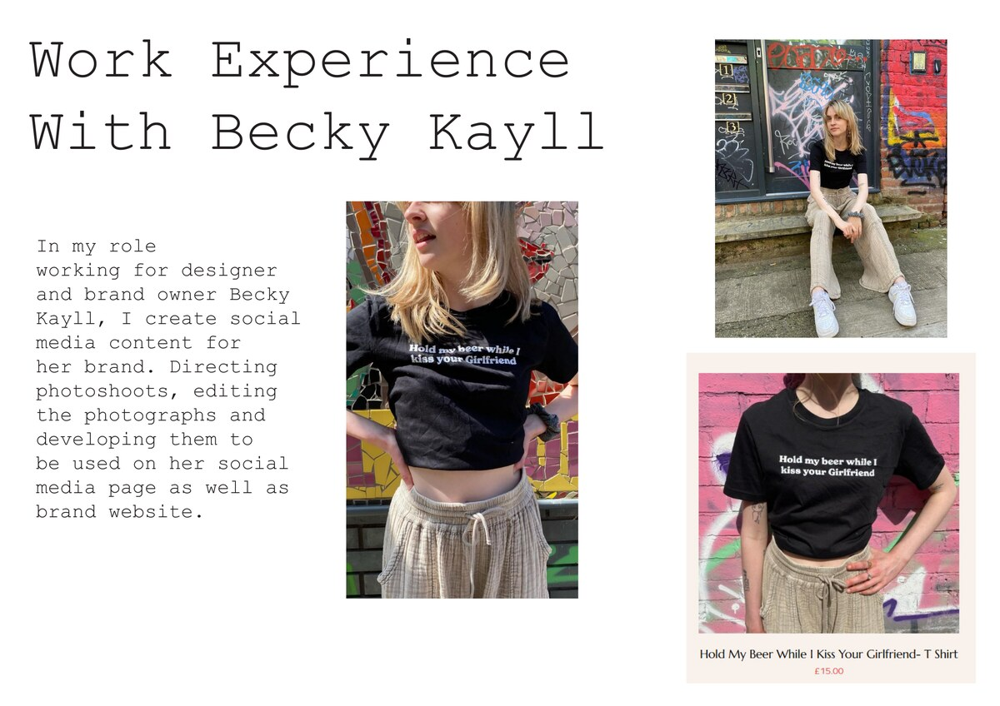
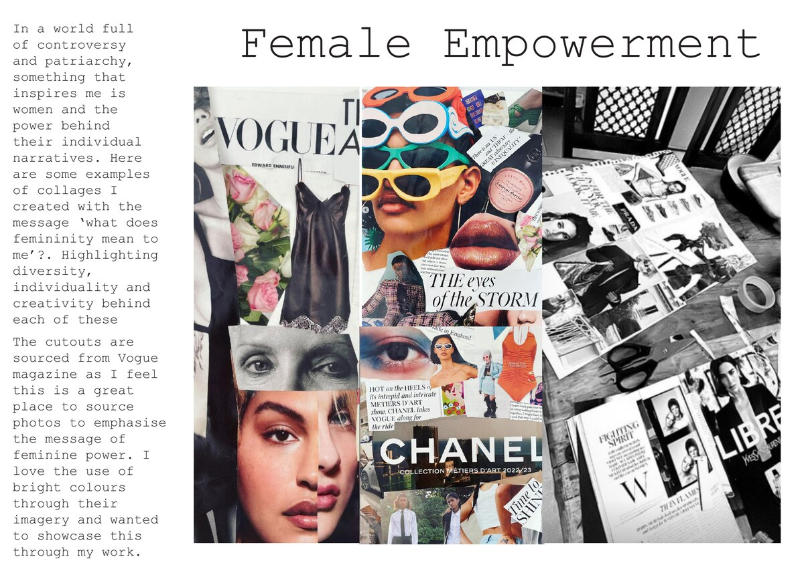
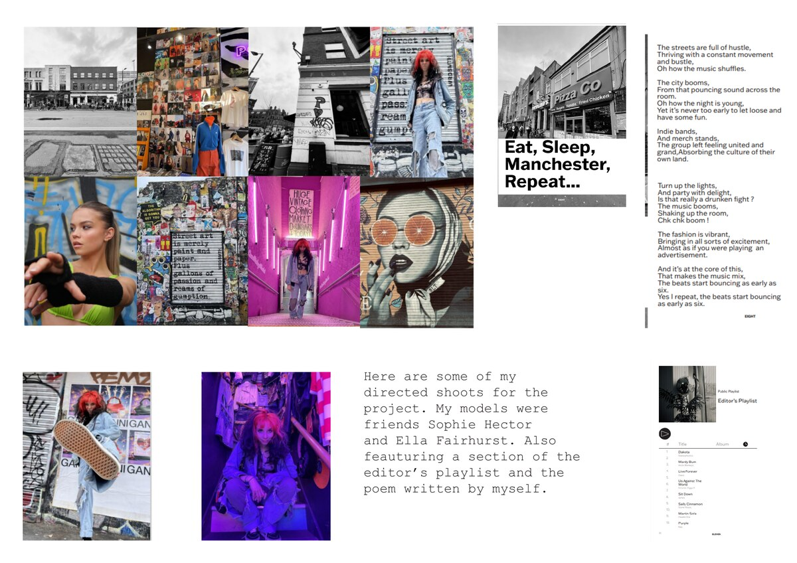
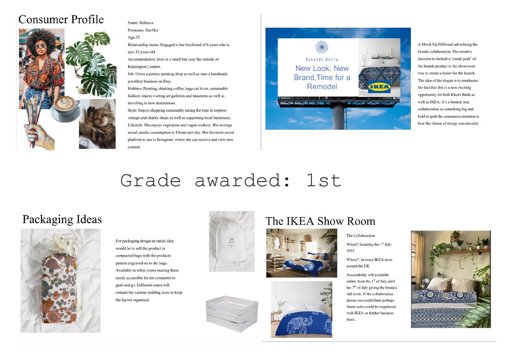

Case Study · 2026
Katie Grimwood — Fashion Portfolio
I designed and built a bespoke portfolio website for Katie Grimwood, using a hot-pink visual system and scrapbook-inspired layouts to reflect her Fashion Promotion work.



Katie needed a portfolio that could present her Fashion Promotion projects with the same energy as the work itself: expressive, editorial, confident, and personal. The direction centred on hot pink, a colour she loves, and an artsy scrapbook feel that suited her degree course and creative identity.
I built the site from scratch as a single-page portfolio with animated sections, project overlays, a moving gallery strip, and clear links to Katie's Instagram, LinkedIn, and email.
01 — Creative Direction
Hot pink, editorial energy, and scrapbook texture
The visual language was intentionally bold: oversized type, layered image strips, collage-like project tiles, and high-contrast hot pink moments. The aim was to make Katie's portfolio feel closer to a fashion zine than a standard graduate website.
Fashion Promotion · Editorial Creative · Brand Strategist
02 — Structure
A single-page portfolio built for scanning
I organised the site around a clear journey: hero introduction, about section, selected projects, moving gallery, experience, and contact. This gave the expressive visuals a usable structure, helping viewers move quickly from Katie's personality into her work and credentials.




03 — The Challenge
Show personality without losing clarity
- Identity — Needed to feel personal to Katie, not generic
- Content — Multiple project types had to sit together coherently
- UX — The expressive style still needed simple navigation
- Mobile — Dense collage layouts had to remain readable
04 — The Solution
A polished site with art-school confidence
- Look — Built a hot-pink visual system around Katie's taste
- Layout — Used scrapbook-style project grids and image strips
- Interaction — Added reveal animation, hover overlays, and a custom cursor
- Build — Hand-coded a responsive HTML, CSS, and JavaScript site